vamo, vamo, vamo…
Ex- sedentarios na Maratona Internacional de Assunção- Paraguai
O Blog fez 2 anos, viva !!!!!!!
E para comemorar este novo ano do blog, eis um relato internacional:
Eu, a Ana Shibata e Claúdio Dundes partimos rumo a Assunção para começar uma nova etapa em nossas vidas de corredores: participamos da nossa primeira corrida internacional e com muito estilo!!!
Acompanhem nossa aventura!
Dia 5 de Agosto:
As 9h20 pegamos o vôo para o Paraguai com a companhia do grupo de corrida Baleias, já mencionado algumas vezes pelo Alecão e pelo Cláudio.
O pessoal é super simpático e descontraído…fizemos uma farra, sorte que a aeromoça era boazinha…rsrsrs
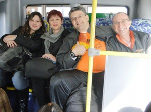 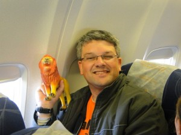 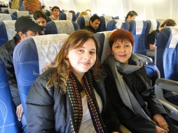
Chegamos as 11h35 no Aeroporto de Assunção e lá mesmo tiramos fotos e conhecemos o resto do pessoal que nos acompanharia pelos próximos dias.


A organização da corrida disponibilizou uma van para nos levar ao Hotel Chaco, lugar confortável, barato, com funcionários super atenciosos e perto de tudo!
Feito o check-in, deixamos as malas e os casacos (achamos que ia estar frio, mas chegando lá estava 30ºC) e fomos retirar os kits na Expo Maratona que ficava na antiga ferroviária de Assunção. O kit era composto pela camiseta, um boné da Adidas, alguns chaveiros e como parte da inscrição ainda tínhamos um seguro de vida, que após a conferência de dados nos dava uma toalhinha com um elástico para prender no pulso!
Passeamos pela feira, experimentamos o Powerade de Maçã, a famosa CHIPA que é um pão de queijo com um toque de erva doce e deixamos nossa marca lá em Asunción.
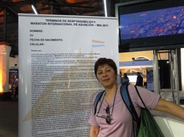  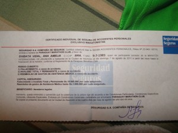 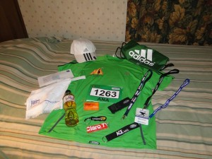 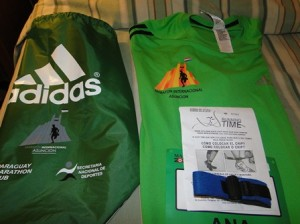 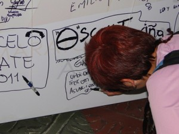
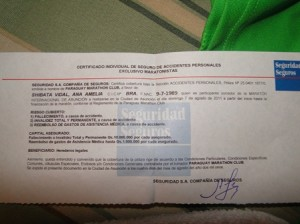 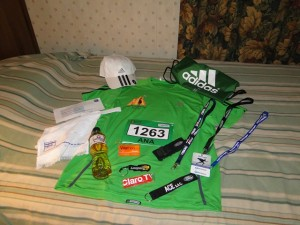 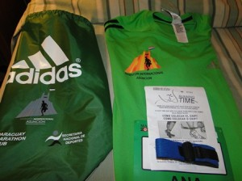 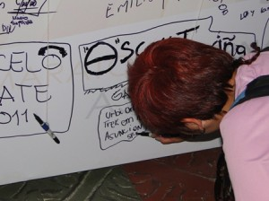
Por volta das 18h30 assitimos ao show de uma banda que tocava rock e animou a galera.
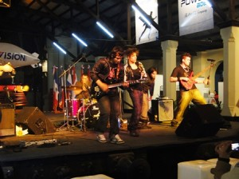 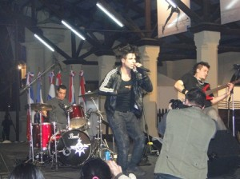
A noite jantamos no El Bolsi, um restaurante super bonitinho, com uma comida muito boa e que apesar de ter dado 1.634.000,00 era super em conta.
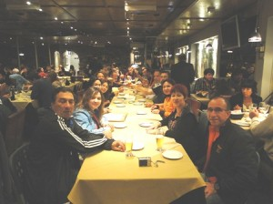 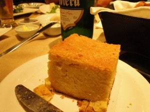 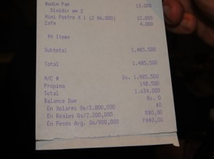 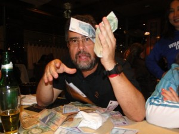 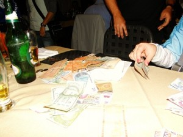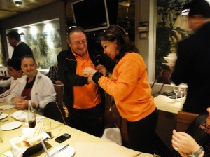 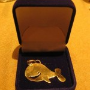
Detalhe:
a Myrtha, organizadora da maratona, foi jantar conosco e ganhou um mimo dos Baleias, um pingente de ouro, entregue pelo Wu!!!
Após o jantar maravilhoso, eu estava super cansada e não via a hora de dormir. Seguimos de volta ao Hotel.
Dia 6 de Agosto:
No sábado, acordamos cedo (Ana Shibata e eu), tomamos café e fomos explorar a cidade. Paramos em um outlet da Adidas e fizemos algumas comprinhas…rsrsrsrs almoçamos e nos econtramos com o grupo Baleias para fazer um tour nos pontos históricos da cidade.
*** Por um infeliz desastre, perdemos as fotos de sábado, e eu só tirei essas 2 com a minha máquina 🙁
Museu da Indepedência e a Catedral Metropolitana de Assunção


Andamos muuuito e pra ajudar, tava um sol de rachar a “moringa”. Fomos até o palácio de Los Lopez e de lá voltamos ao hotel, porque estava impossível de andar pela cidade sem água e com o sol forte.
De noite voltamos à ferroviária e participamos do jantar de massas e encerramento da feira, com direito a muita música paraguaia!
Fui logo dormir porque estava com dores nas pernas da andança pela cidade.
Dia 7 de Agosto:
DOMINGO!
Finalmente o dia tão esperado!!!
Nervosismo, ansiedade, felicidade e alegria eram os sentimentos pairando no ar!
Levava uns 7 minutos do hotel até a largada. Chegando lá tiramos mais fotos com a turma de cetáceos…kkk e logo fomos para a largada. Quase chorei de emoção!
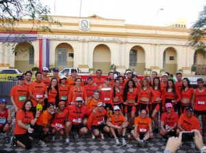 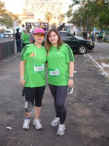
Ah nem comentei o mais importante: o presidente Fernando Lugo estava presente no ínicio da corrida, dei uma de paparazzi e tirei uma fotinho enquanto ele andava..hehehe
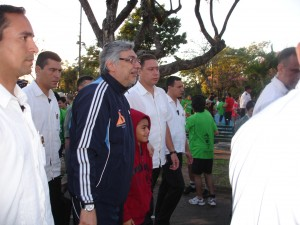
Após o discurso do presidente e a seqüência de fogos, deu-se a largada e partimos rumo aos 10k. No começo o clima estava ameno, os moradores ficavam na calçada torcendo por nós, uma imensidão de pessoas de verde e alguns de laranja, tomavam conta das ruas de Assunção. Em Asunción eles não fecham a rua como aqui no Brasil, lá os guardinhas ficam controlando o fluxo e o pessoal respeita muito os pedestres, tanto é que vi no máximo uns 5 semáforos em toda a cidade.
Uma hora depois da corrida sentia-se um calor muito grande, ao passar por um termômetro eletrônico, marcava 29º. Terminei a prova com 1h34, não fui tão bem como esperava e andei uma grande parte do percurso, devido à falta de treino.
Cheguei a tempo de tirar foto da minha querida mãe atravessando o portal e logo fomos pegar nosso isotônico ( se aqui em São Paulo estamos acostumados com 1, lá eles te davam 3), pegamos uma sacolinha que continha Bananas, maçã ou mexerica, um suco e uma barrinha de cereal muito saborosa. Encontramos um cantinho e sentamos pra respirar! A Drª Ana estava extasiada!!!!
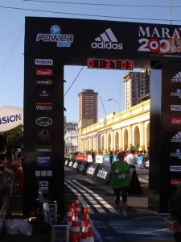 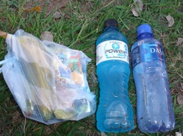
Foi uma alegria ter completado a prova e como eu mencionei no dia: senti que tinha cumprido meu dever.
 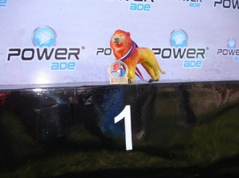
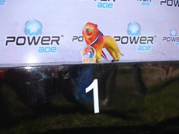 
Depois de descansar um pouco, ficamos na arquibancada torcendo por nossos companheiros!
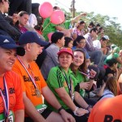 
 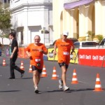 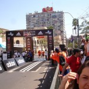 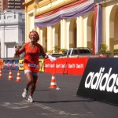 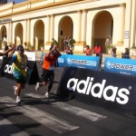 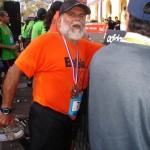
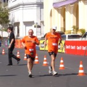 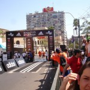 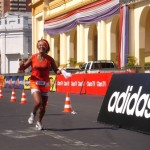 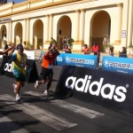 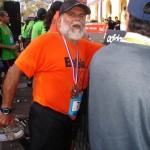  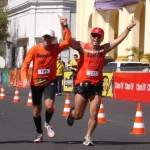 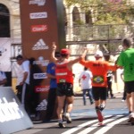 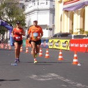 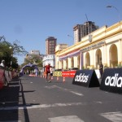 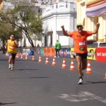 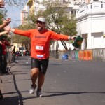
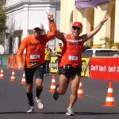 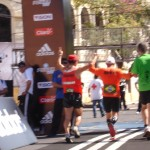 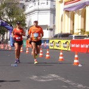 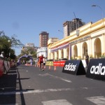 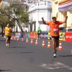 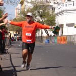 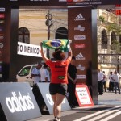 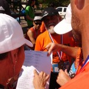
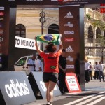 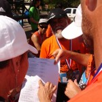 
Se Deus quiser ano que vem estaremos de volta a Asunción, mas eu pretendo correr a meia maratona!
Será que consigo? Vou tomar vergonha na cara e começar a treinar para ano que vem fazer bonito na frente dos Baleias que conquistaram 4 troféus!
Espero também que a turma do Ex Sendentários esteja completa dessa vez!
Por último, mas não menos importante, gostaria de agradecer aos Baleias que nos acompanharam nesta maravilhosa viagem!!!
Que venham mais corridas e junto, mais posts!!!
***Especial***
Abaixo vocês conferem a nossa homenagem ao Henrique, filho do Cláudio, que nos emprestou o Leãozinho que fez sucesso entre os paraguaios e paraguaias!!!
La Fuerza do Leonzito!!!!!!
 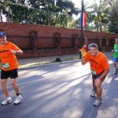 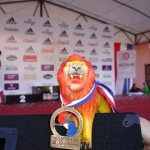 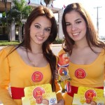 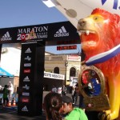
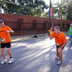 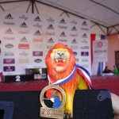 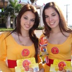 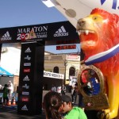
Beijão 😀
Melinha
.jpg "DSC01744 (1024x576)")
.jpg "DSC01781 (1024x576)")
.jpg "DSC01840 (1024x576)")
.jpg "DSC01855 (1024x576)")

{kind=link}
{kind=link}
{kind=link}
{kind=link}
{kind=link}
{kind=link}
EU AMEI ESTE POST!!!!!!!!!!
Parabéns minha querida e mais entusiasmada companheira de blog e corridas. Que vc gostou eu não tinha dúvidas. Mas o post surpreendeu as minhas expectativas, que eram MEGA EXAGERADAS!!!!!!
Gostei demais disso.
E lógico! Lógico que vc vai conseguir SE EMOCIONAR com os 21 na próxima edição.
Eu vejo nos seus olhos um brilho quando vc fala e planeja que não tem como ser diferente. Mélinha.
Um milhão de vivas!!!!!!!!!!!!!!
Filhota,
Parabens pelo relato!!!
Vc conseguiu sintentizar muito bem nossa aventura entre Los Hermanos e o grupo Baleias. Nossa estréia internacional foi a princípio embuida de oba-oba do entusiasmo da galera que se concretizou e marcou nossas provas de pedestrianismo fora do país, além da vontade de participar de outras provas com nossos amigos-corredores que só encontramos aqui na telinha.
Ah, quanto a fazer a meia em 2012, também estou pensando da mesma forma……
jks
Ai gente!
Desse jeito fico acanhada!!
Deu um trabalhão pra falar sobre essa viagem, muita responsabilidade!!!
Mas espero que tenham gostado, tanto quanto eu!
Ano que vem nós vamos arrasar!!!!!!!!!!!!!!!!!!
Parabéns pela Corrida de todos !!!
Gostei do Post mozão, Ano que vem se Deus quiser estarei com vocês na corrida.
Correr, correr, correr! Esse é o lema de quem realmente gosta e sente prazer em participar de corridas. Nada é tão fácil. O querer e o poder serão antagônicos sempre que não houver força de vontade e, principlamente, muita preparação. Praticar esportes é muito saudável, mas desde que respeitemos os nossos limites. Parabéns pelo entusiasmo e pelas provas vindouras.
Melina, foi um prazer conhecer você e sua mãe. A máxima continua, em Assunção foi o início de uma grande amizade. Estarei lá também em 2012 a menos que seja convocado pelo senhor. Mas antes de Assunção tem 10 km em Curitiba também e a festa Baleias se transportará para lá. Venha mais uma vez. E o Gontran, heim, que maturidade. Parabéns. Miguel Delgado.
Parabéns Melinha, Ana e Claudio, o relato está ótimo, e a maratona Pão de Açúcar vocês vão?
Adorei Melinha! Você pegou muito bem e conseguiu transmitir o espírito da festa!
Me identifico com sua força de vontade. É parecido com o Alex do início de 2010, falo em terceira pessoa porque me transformei durante minhas estripulias.
Parabéns pelo relato. Parabéns pela alegria transmitida. E muito obrigado por este post que me traz vontade de sair correndo.
Vamo, vamo, vamo…